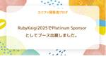
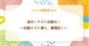

ユニファ開発者ブログ
https://tech.unifa-e.com/
ユニファ株式会社プロダクトデベロップメント本部メンバーによるブログです。
フィード

ユニファ株式会社はRubyKaigi 2025でPlatinum Sponsorとしてブース出展しました。
ユニファ開発者ブログ
こんにちは、ユニファでサーバーサイドエンジニアをしている小川です。 2025年4月16日から4月18日まで開催された「RubyKaigi 2025」にPlatinum Sponsorとしてブースを出展したので、当日の様子などを振り返りたいと思います。 ユニファとしては初めてのRubyKaigiへのブース出展となります。 会場 出展内容 最後に
8日前

進め！テスト自動化！ 〜自動テスト導入、奮闘記！〜 1
1
ユニファ開発者ブログ
「私は思考する、故に、私は存在する」 Rene Descartes：方法叙説（講談社学術文庫 小泉義之 訳） より /* BoxDesign */ .nomadBox7 { padding: 1.5em; margin: 15px 0; color: #323232; border-top: 5px solid #55A8AC; box-shadow: 1px 1px 2px rgba(0,0,0,.3);/*影*/ } .nomadBox7 p { padding: 0; margin: 0; } /* CSS end */ はじめに 始まりは「ある危機感」から ツールの選定とROI試算 "…
10日前

WAKE Careerさんにインタビューしていただきました！
ユニファ開発者ブログ
こんにちは、ユニファでAndroidエンジニアをしている、あいばです。 先日、女性のためのITキャリア転職サービス「WAKE Career」さんからお声がけいただき、インタビューを受けました。 自分のキャリアを振り返るのは少し照れくささもありましたが、新卒の頃のことや、うまくいかなかった時期のことをあらためて言葉にすることで、あの頃の自分の頑張りを認めてあげられた気がします。 もし今、キャリアに悩んでいたり、自分に自信が持てなかったりする方がいたら、「こんなやつでもなんとかやってるんだな」と、気楽な気持ちで読んでもらえたら嬉しいです。
21日前
ドキュメント作成が苦手なエンジニア！集まれ！
ユニファ開発者ブログ
初めに ユニファでバックエンドエンジニアをしている八木です。ドキュメント作成、エンジニアでは苦手意識のある人も多いのではないでしょうか。日常的に仕様書などを書く機会があれば練習になっていいのですが、そうでない場合や、初めて仕様書や手順書を書く場合など、戸惑いながら真っ白な画面を見続けている人もいるのではないでしょうか。 本記事はエンジニアのみなさんの中でのドキュメント作成への苦手意識を少しでも減らしていけたらいいなと思っています。初めてドキュメント作成をするような初級者向けの内容です。ドキュメントの骨組み作成までの道筋を記載しています。
1ヶ月前
ユニファ開発者ブログを「フリーランスHub」でご紹介いただきました！
ユニファ開発者ブログ
こんにちは。ユニファ開発本部長のやまぐち(@hiro93n)です。 レバレジーズ株式会社の運営する「フリーランスHub」にて当ブログをご紹介いただきました。 freelance-hub.jp 【フリーランスHubトップページ】https://freelance-hub.jp/ 【フリーランスHub案件一覧ページ】https://freelance-hub.jp/project/ この機会にご覧いただけますと幸いです！ <求人コーナー> ユニファの開発チームでのプロダクト開発にご興味を持って頂けましたら、ぜひ募集要項をご覧ください！ jobs.unifa-e.com
1ヶ月前
画像におけるマルチモーダルLLM活用
ユニファ開発者ブログ
こんにちは、ユニファで機械学習エンジニアをしている藤塚です。 昨今の生成AIの進展が目まぐるしいですが、ユニファでも例にもれず生成AI活用が進んでいます。特に、保育園で日々撮影される写真データの活用は主要テーマの1つであり、写真データにおける生成AI活用の検討が進められています。 従来の機械学習モデルと比較すると、LLM（Large Language Model）という名前の通りすでに大規模データを事前に学習していることからチューニングがなくとも十分な性能のモデルとして利用できる場合も多く（また今後の性能向上も十分期待できる）、専用のタスクに特化した大量のデータの用意から、モデルを学習するため…
1ヶ月前
Using OpenSearch with Ruby on Rails
ユニファ開発者ブログ
By Patryk Antkiewicz, backend engineer at Unifa. In one of Unifa products we provide the functionality called Letter, which, as the name suggests, is a kind of message sent from nursery school to parents of all kids belonging to specific classes. It became necessary to implement a search feature for…
1ヶ月前
品質保証の"お作法" 〜テストプロセス解体新書〜
ユニファ開発者ブログ
「語り得ぬものについては、沈黙せねばならない」 Ludwig Josef Johann Wittgenstein：論理哲学論考 より /* BoxDesign */ .nomadBox7 { padding: 1.5em; margin: 15px 0; color: #323232; border-top: 5px solid #55A8DC; box-shadow: 1px 1px 2px rgba(0,0,0,.3);/*影*/ } .nomadBox7 p { padding: 0; margin: 0; } /* CSS end */ はじめに おことわり （再掲）品質を語るには、「…
2ヶ月前
PdM Days 2025 軌跡から、つむぐ。参加レポート
ユニファ開発者ブログ
こんにちは、ユニファでプロダクトマネージャーをしているたしろ（@tsrs88）です。 2025年3月15日に開催されたPdM Days 2025のDay4に現地で参加させていただきました。 PdM Daysは昨年に続き、2回目の開催です。 pdmdays.recruit-productdesign.jp セッションやOST（参加者同士のディスカッション）を通じて、多くの学びを得ることができました。この記事では参加レポートとして感想や学びを書きたいと思います。
2ヶ月前
ユニファ開発者ブログを「レバテック フリーランス」でご紹介いただきました！
ユニファ開発者ブログ
こんにちは。ユニファ開発本部長のやまぐち(@hiro93n)です。 レバテック株式会社の運営する「レバテック フリーランス」にて当ブログをご紹介いただきました。 freelance.levtech.jp この機会にご覧いただけますと幸いです！ <求人コーナー> ユニファの開発チームでのプロダクト開発にご興味を持って頂けましたら、ぜひ募集要項をご覧ください！ jobs.unifa-e.com
2ヶ月前
第 3 回 生成 AI Innovation Awards に登壇しました！
ユニファ開発者ブログ
こんにちは。VPoE の柿本です。 以下の記事でご報告しました「生成 AI Innovation Awards」のピッチコンテストに登壇してきました！ tech.unifa-e.com ピッチコンテストは GOOGLE CLOUD 主催の「AI Agent Summit ’25 Spring」のセッションの一つとして行われました。 ユニファの生成 AI への取り組みについて 5 分間のプレゼンを行い、業界の最前線で活躍する審査員の方々に評価をいただく貴重な機会となりました。
2ヶ月前
UIUX Camp! 2025 参加レポート
ユニファ開発者ブログ
デザイン課のなかとみです。 2025年3月1日に開催されました UIUX Camp!2025 に参加しました。 cp.nijibox.jp 講演1：UXのこれまで、現在、そしてこれから ヤコブ・ニールセン氏
2ヶ月前
ユニファPdMが選ぶ！印象に残るリリース 2024年度編
ユニファ開発者ブログ
こんにちは、ユニファでプロダクトマネージャー（以下、PdM）をしている、たしろです。 PdM Days Day4に参加することが決まりました。（倍率高かったみたい）他社のPdMの方とお話しできる機会を楽しみにしています。 最近、PdMに関する採用ページの作成準備を進めていて、「ユニファのルクミーというプロダクトがどんなものを作っているのか？」についてあまり情報がないな、と感じました。 保育領域のプロダクトでもあるので、別の業界の方からは課題が見えにくかったり、具体的な機能が何を解決しているか、も想像がしにくいだろうな、と。 そこで、今回はユニファのPdMメンバーに「2024年度で印象に残るリリ…
2ヶ月前
TokyoWomen.rb #1 に参加＆登壇しました
ユニファ開発者ブログ
サーバーサイドエンジニアの船曵です。 2025/3/1にTokyoWomen.rb開催されました。 tokyowomenrb.connpass.com rubyコミュニティに参加してみたいという思いはありつつも、 なかなか一歩踏み出せずにいたのですが、今回、初めての登壇という形で参加することができました。
2ヶ月前
ユニファと共に進む、品質保証の旅 〜ユニファQAの姿を考察してみた〜
ユニファ開発者ブログ
「品質は、誰かにとっての価値である」 Gerald Marvin Weinberg：ソフトウェア文化を創る1 ワインバーグのシステム思考法 より /* BoxDesign */ .nomadBox7 { padding: 1.5em; margin: 15px 0; color: #323232; border-top: 5px solid #55A8DC; box-shadow: 1px 1px 2px rgba(0,0,0,.3);/*影*/ } .nomadBox7 p { padding: 0; margin: 0; } /* CSS end */ はじめに おことわり 品質を語るには…
3ヶ月前
ユニファの保育AIがGoogleの生成 AI Innovation Awardsでファイナリストに選出されました！
ユニファ開発者ブログ
こんにちは。ユニファAI開発推進部の田渕です。 周囲で花粉の被害が聞かれるようになった昨今、みなさまいかがお過ごしでしょうか。幸い、私は花粉症ではないのですが、いつか来るかもしれないとビクビクしながら生活しています。 そんなタイミングで素敵なニュースが飛び込んできました。 1. はじめに ご存知の通り、弊社は、保育者の業務負担を軽減し子どもと向き合う時間を増やすことを目的に、保育総合ICTサービス「ルクミー」を提供しています。この度、Google Cloud Japan主催の「第3回 生成 AI Innovation Awards」において、ルクミーの保育AIサービスがファイナリストに選出され…
3ヶ月前
Shoryukenからaws-activejob-sqs-rubyへの移行を検討してみる
ユニファ開発者ブログ
こんにちは、サーバーサイドエンジニアの本間です。 弊社ではSQSをジョブキューとして使い、バックグラウンドジョブを処理させているサービスがそれなりにあります。 その際、 shoryuken を使うことで、自分たちで実装する工数をなるべく少なくしています。 過去にこのgemを使ったエントリも何個か投稿しています。 tech.unifa-e.com tech.unifa-e.com 安定して動作もしており、大変お世話になっているgemなのですが、一時期このgemのGithubリポジトリがアーカイブ状態になっており、今後のメンテナンスやセキュリティアップデートが難しい状況になっていました。 あら、s…
3ヶ月前
入社３ヶ月目のPdMがユニファで働く実感について
ユニファ開発者ブログ
こんにちは！プロダクトマネージャーのさいとうです。 私が所属するPdM一課では入社3ヶ月目にブログを書くという慣例があるようで、私が入社前にチェックした記事のいくつかは先輩PdMの入社3ヶ月目記事でした。今改めて読んでみると、書かれている内容は本当にその通りだったな〜と実感しています。 この記事では私がユニファに入って感じた良さ、マルチプロダクトの開発環境を体験して感じたギャップ、インパクトスタートアップの開発組織って実際どうなんだろう？と入社前に持っていた疑問の答え合わせなどをお届けします。
3ヶ月前
ママエンジニア、新世界ユニファに挑む〜子育てもキャリアも最強に〜
ユニファ開発者ブログ
こんにちは。今年1月1日に入社したプロダクトデベロップメント本部開発二部SW5課のサーバーサイドエンジニアのおうまえです。 ユニファに入社してあっという間に三週間が経ちました。最初は結構不安だったけど、今はすっかり解消され、これから会社やチームに何をコミットできるか毎日ワクワクしています。 本記事では、二人の子供を育てているママエンジニアの視点から、ユニファに入社して3週間で感じた会社の暖かさについて書いてみたいと思います。 ママエンジニア、新世界ユニファに挑む〜子育てもキャリアも最強に〜
4ヶ月前
未知との遭遇が楽しい理由：AIと歩むエンジニアの冒険
ユニファ開発者ブログ
みなさん、こんにちは。 ユニファでエンジニアのマネージャーをしている田渕です。 2025年になりましたね。新しい年を迎えるにあたり、新たなスタートを迎えたり、目標を立てたりしている方も多いのではないでしょうか？ ユニファでは昨年のアドベントカレンダーで初めて、開発関連部署以外の方々にも登場していただきました。 今日は、最終日に登場した土岐さんのブログを引用しつつ、「なぜ私がAIをこんなに楽しみにしているのか」に気づいた話をしていきたいと思います。
4ヶ月前
やっぱりサンタクロースがいる世界の方が、素敵ではないだろうか
ユニファ開発者ブログ
この記事は、ユニファAdvent Calendar 2024の25日目の記事です。 adventar.org 生まれて初めてのアドベントカレンダー ルクミーを運営するユニファ代表の土岐です。生まれて初めてアドベントカレンダーに投稿するので、やや緊張していますが、人生初という体験は、いつもワクワクするので張り切っていきます。 アドベントカレンダーは、クリスマスまでの日々を楽しむためのカウントダウンです。このブログの投稿日がクリスマスでもあるため、クリスマスに関連する話題を考えてみました。
5ヶ月前
バッチ処理書くときに使うアレ
ユニファ開発者ブログ
この記事はユニファアドベントカレンダーの24日目の記事です！ adventar.org いつか大きめのバッチ処理を書く必要があるかもしれないので以前から興味があった ActiveRecord::Batches#find_each を使わないで Array#each を使ってしまったら実際にどれだけメモリを食うのか手元のマシンで検証してみた。
5ヶ月前
「学び方」のすゝめ 〜SpeedDrivenな、インプット方法〜 【後編】
ユニファ開発者ブログ
この記事はユニファアドベントカレンダーの23日目の記事です！ adventar.org 前回までのあらすじ 「高田流マンダラノート」って、何なん？ SQ3R法（メタ認知によるテキスト学習法）って？ KWLチャートって？ 自分で問う → 答える → 問う → 答える... で、どうだった？ おわりに 前回までのあらすじ ※本編を読みたい方は、目次からどうぞ！ 高田は、オンボーディングを「受動的に学習」して進めていった。 だが、「教えられたことが、何にも覚えていない」という失態を犯す！ 置かれている状況に絶望しながらも、天啓の如く一筋の光明を見出した！！ 「あるソフトスキルを使用した学習法」とは！…
5ヶ月前
「学び方」のすゝめ 〜SpeedDrivenな、インプット方法〜 【前編】
ユニファ開発者ブログ
この記事はユニファアドベントカレンダーの22日目の記事です！ adventar.org 自己紹介 「頭に入らない → 身につかない」ことの背景 「このままじゃ、マズイ」 → 「なら、どうする？」 皆さん。オンボーディング、捗ってますか？ 僕はここ2ヶ月で、めちゃくちゃ捗ってます！ 仕様把握・こちらから質問した内容などからのインプットや、学んだことのアウトプットに至るまで「自分から能動的に学ぶこと」で、業務で必要なことを爆速で理解出来るようになりました！ えっ？そんなにうまいこと、いかないだろうって？ いやいや、それが「あったんですよ！」 とにかく、これから書く内容を実践していただければ、わかり…
5ヶ月前
Ruby 2.5→3.3、Rails 5.2→7.0 バージョンアップの振り返り！
ユニファ開発者ブログ
この記事はユニファアドベントカレンダーの21日目の記事です。 adventar.org こんにちは、サーバーサイドエンジニアの横山です。 今年は、フォトサービスのRuby/Railsの大幅なバージョンアップを実施しました！ Ruby/Railsのバージョンアップは私にとって初めての経験だったので、どのような手順が必要で、どれだけ時間がかかるか未知数でした。 手探りで進めた部分も多かったため、（次回バージョンアップする際の自分のためにも^^;）今回は手順や気をつけるポイントをまとめておきたいと思います。 一昨年〜昨年に同じチームの方が書いた記事も参考にさせていただきました！ Railsのプロダク…
5ヶ月前
Unifa業務基幹システムリプレース ソアスク導入
ユニファ開発者ブログ
この記事は、ユニファAdvent Calendar 2024の20日目の記事です。 adventar.org みなさんこんにちは。今年もお邪魔させていただきました。システム企画の鄭（ジョン）です。 Advent Calendarも3回目、過去の私からはこんな内容でした。 tech.unifa-e.com tech.unifa-e.com そして今年のテーマは[Unifa業務基幹システムリプレース ソアスク導入]です。 実は今年、Unifaの業務基幹システムのリプレースがありました。 その内容について振り返ってみようと思います。
5ヶ月前
ユーザーファースト！でも売上も欲しいよぉ。。。 その間で考え中
ユニファ開発者ブログ
この記事は、ユニファAdvent Calendar 2024の19日目の記事です。 adventar.org こんにちは。ユニファの商品企画部というビジネス部門で、保護者のサービス開発やマーケティングを担当している門岡と申します。 ユニファは、保育施設の業務効率化を目指すICT企業であり、主なユーザーは保育士や園長先生ですが、同時に数十万人の保護者の方々にもご利用いただいています。 私たちビジネス部門の目標は、より多くの保育施設にサービスを導入し、継続利用していただくことです。一方で、保護者の方々が写真関連の商品を購入したいと思えるようなマーケティング施策を展開することも重要なゴールです。 こ…
5ヶ月前
第二営業部のあるメンバーのOne more stepが産みだした「ユーザー会」とは？
ユニファ開発者ブログ
この記事は、ユニファAdvent Calendar 2024の18日目の記事です。 adventar.org 導入 こんにちは！第二営業部の佐藤文昭です。 第二営業部は、比較的規模の大きなお客さまを担当している営業部ですが、我々ならではの取り組みをひとつご紹介したいなと思い、昨年から始まったお客さま同士の交流会「ユーザー会」についてご紹介させていただきます。
5ヶ月前
Slack から AWS CLI を実行して EC2/ECS をスケーリングする
ユニファ開発者ブログ
こんにちは、SRE の中村です。 この記事はユニファアドベントカレンダーの17日目の記事です！ Unifa Advent Calendar 2024 - Adventar はじめに 今日は、年末年始のお休み期間でもスマホ一つで障害対応ができるようになりました、というお話をしていきます。（絶対にしたくはない） 先日、SRE が勤務開始する前に障害が発生し、対応権限のあるメンバーがおらず初動が遅れてしまったことがありました。 そこで、Bot 的なもので AWS リソースの操作ができないかという話になり、Slack から AWS CLI を実行できる環境を構築することになりました。 以下のような構成…
5ヶ月前
Gem bulletのアラート「Need Counter Cache」の対処法
ユニファ開発者ブログ
[Rails] Gem bulletのアラート「Need Counter Cache」の対処法 初めに こんにちは。ユニファのバックエンドエンジニア、シュウです。 N+1問題を検出するために、多くのRailsアプリケーションでgem bulletが導入されていると思います。弊社のRailsアプリケーションでもgem bulletを利用しています。そんな中、ある日bulletから見慣れない「Need Counter Cache」のアラートに遭遇しました。 今回は最小限の修正でこの「Need Counter Cache」を解消し、効率的にクエリを発行できるようにした方法を紹介したいと思います。 結…
5ヶ月前